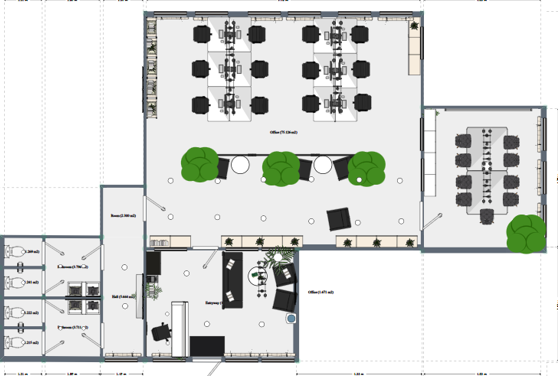

test
Qui som?
Som un equip de quatre estudiants d’un cicle d’informàtica. Com a grup estem vinculats a aquest projecte ja que dos integrants del grup son monitors. Així doncs, el nostre objectiu es que tots els centres d’estudis tinguin un mètode senzill i ràpid d’organització, gestió i comunicació, i que l’educació no hagi d’estar al dia de les noves plataformes, la nostre plataforma estarà al servei de l’educació. Oferim una plataforma personalitza da per a cada centre, on podran consultar els xats, els horaris, bases de dades, així com les altres plataformes digitals que integri l’escola o centre educatiu. La nostra plataforma unirà els anteriors conceptes, reunint-los en una interfase fàcil d’utilitzar i atractiva, adaptada a l’equip docent i a l’alumnat. Hem considerat que aquesta es una innovació que l’educació actual necessita.
test
Com va començar?
Dos integrants del grup son monitors, un d’ells va tenir una idea per la qual hem desenvolupat aquesta aplicació. L’experiència de monitors ens ha ensenyat que sovint, l’organització d’aquests centres es caòtica, la comunicació moltes vegades inexistent, una plataformes i eines no adaptades a les necessitats dels centres en la actualitat. Amb això els membres de l’equip vam considerar la possibilitat d’aplicar els nostres coneixements informàtics per aportar una gestió en aquestes organitzacions, en primera instancia dirigida al lleure, posteriorment ens hem expandit a centres educatius, una plataforma adaptada a les necessitats que el sistema educatiu i de lleure necessita en la actualitat i en actualització constant per no deixar mai d’oferir tot el que es necessari, això és Jovaggio.
test
Logo

Volem que Jovaggio sigui referent en l’àmbit educatiu, fomentant la cohesió digital entre la docència i l’alumnat, tal i com hem volgut reflectir en el nostre logotip, amb els nostres color corporatius, el blau de la confiança i seguretat, amb el groc de l’alegria i joventut. Joventut que també hem volgut incloure en el nostre nom, “jiova” (jove) i “ggio” (de maneggio, administrar en Italià).
test
Ubicacion
Estem situats el barri de la Sagrada Família, de l’Eixample de Barcelona. Carrer de Padilla, 238, Eixample, 08013 Barcelona
